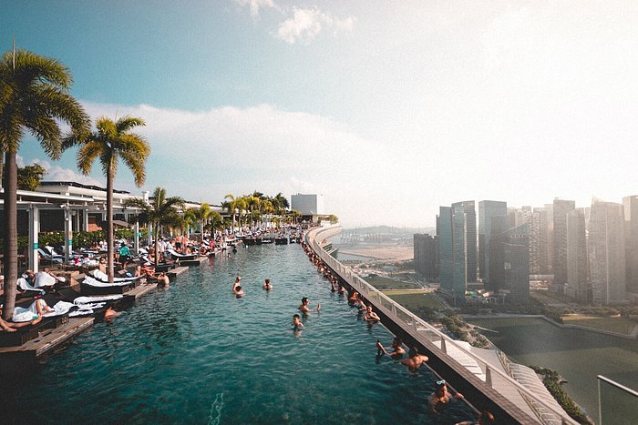
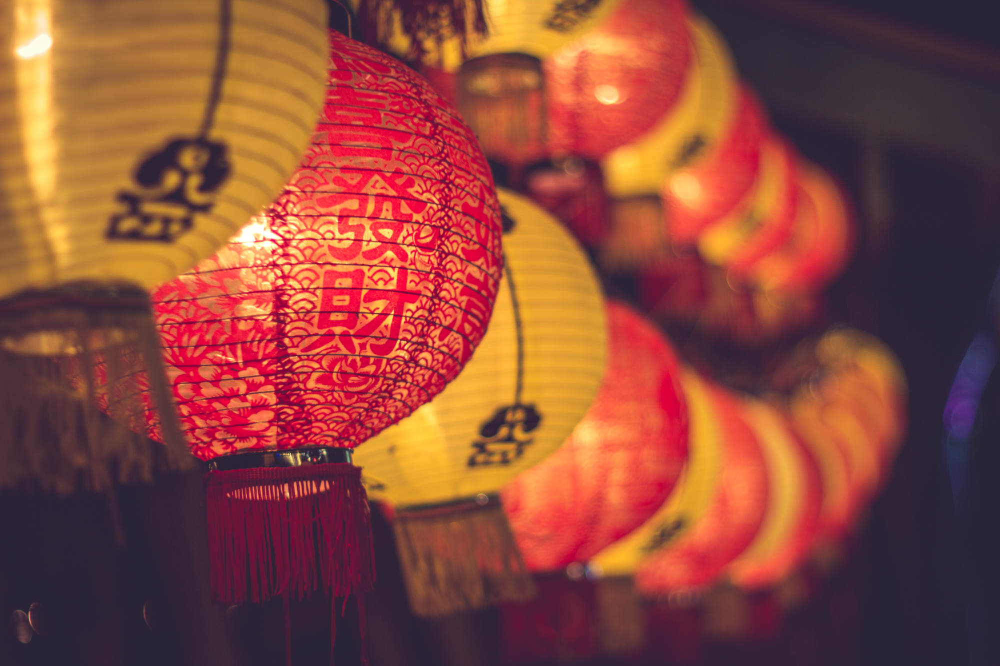
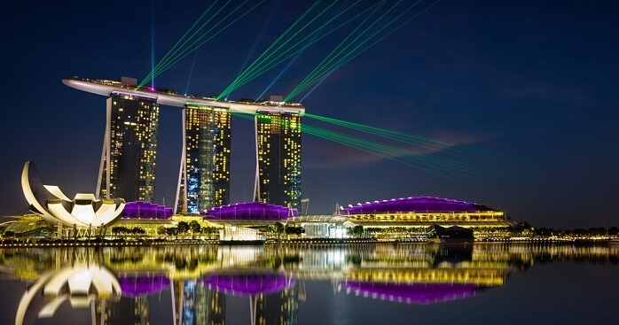
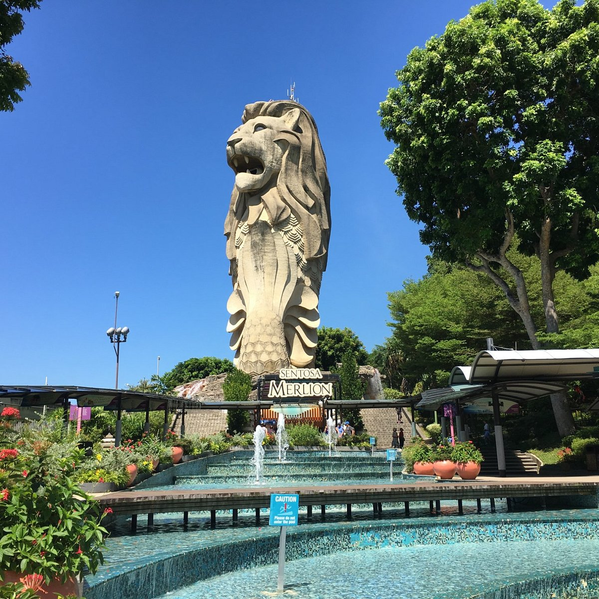
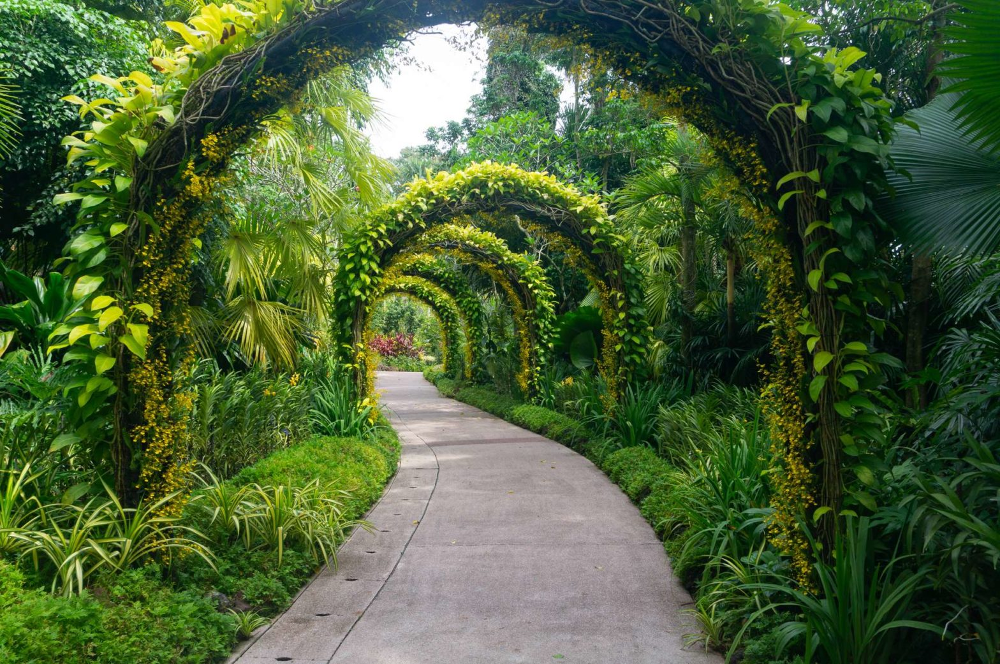
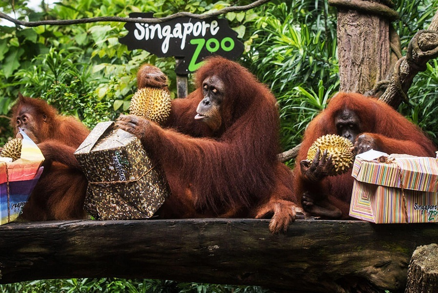

Singapore, officially the Republic of Singapore, is an island country and city-state in maritime Southeast Asia. It is located about one degree of latitude (137 kilometres or 85 miles) north of the equator, off the southern tip of the Malay Peninsula, bordering the Strait of Malacca to the west, the Singapore Strait to the south, the South China Sea to the east, and the Straits of Johor to the north.
The culture of Singapore is a melange of Malay, South Asian, Southeast Asian and Eurasian culture and influences. The quintessential cosmopolitan, Singaporean culture has transformed greatly over the years. The indigenous culture of Singapore was originally influenced by Austronesian people who arrived here from Taiwan. During the course of many years, Singapore's culture was further influenced and inspired by multiple Chinese dynasties and other Asian countries which have eventually given shape to the eccentric and striking Singaporean culture that we see today.
Singapore's economy grew at a faster than expected pace in the third quarter of 2023, boosted by tourism, and with manufacturing returning to a small quarter-on-quarter growth.

there is lots of palces to visit in singapore. Most Popular are
Discover Marina Bay Sands, a landmark destination in the heart of Singapore’s vibrant city district. Envisioned by renowned architect Moshe Safdie, the striking aesthetic defiantly blurs the line between art and architecture.
Located in the center of Singapore, the Supertree Grove is one of the main attractions of the Gardens by the Bay. Staying true to the utopian architecture commonly seen in Singapore, these ‘Supertrees’ are structures designed to aesthetically resemble trees. Ranging between 25-50 meters tall, these 18 Supertrees provide shade in the morning and feature a dazzling light show at night.

Sentosa is an island resort off Singapore’s southern coast, connected to the city by road, cable car, pedestrian boardwalk and monorail. By Sentosa Station, Tiger Sky Tower has panoramic views that can stretch as far as Indonesia. On the south coast, Palawan Beach is lined with food stalls and bars, and has a suspension bridge to a small offshore island. Palm-lined, crescent-shaped Tanjong Beach is more tranquil.
Founded in 1859, the Singapore Botanic Gardens showcases the best and most spectacular of tropical flora set in stunning verdant landscape.
The Singapore Zoo, formerly known as the Singapore Zoological Gardens or Mandai Zoo, is a 28 hectares (69 acres) zoo located on the margins of Upper Seletar Reservoir within Singapore's heavily forested central catchment area. Opened in 1973, the zoo was built at a cost of $9 million that was granted by the government of Singapore.
